EEG/Signal Processing--Advanced Part 2
 Looking over components
Looking over components
Note:
This post is a ported version of Jupyter Notebook from my mne-eeg project: https://github.com/jeon11/mne-egi/blob/master/walkthrough_advanced.ipynb/walkthrough_basics.ipynb
Advanced Processing
In the previous walkthrough notebook, we got to manually inspect raw instance and do some cleaning based on annotations and creating evoked responses from time-locked events.
In this section, we run independent component analysis (ICA) on the epochs we had from the last notebook. We look in ICs to identify potentially bad components with eye related artifcats. Then, we implement autoreject (http://autoreject.github.io) which automatically attempts to find bad channels and interpolate those based on nearby channels. At the end, we plot the ERPs by channels that we are interested in looking and make comparison.
Note that the plots below will be using print statements for demonstration purposes.
import mne
import pandas as pd
import numpy as np
from matplotlib import pyplot as plt
import Tkinter
from autoreject import AutoReject
from autoreject import get_rejection_threshold
from mne.preprocessing import ICA
Loading epochs
We imported all the necessary dependencies. Now we load the saved epochs from last notebook.
epochs_tlstS = mne.read_epochs('/data/epochs_tlsts-epo.fif', preload=True)
print(epochs_tlstS)
<EpochsFIF | 388 events (all good), -0.25 - 0.8 sec, baseline [-0.25, 0], ~72.8 MB, data loaded, with metadata,
u'lstS': 388>
Running Independent Component Analysis (ICA)
ICA is a signal processing method to decompose signals into independent sources from a mixed signal. A representative example is the cocktail party effect, which is a phenomenon in which you are able to concentrate on the voice of the speaker you are conversing with regardless of the various background noise in a party. Using ICA helps seperate the different sources of mixed sound, under the assumption that the sound components are linear. This method works for EEG signal preprocessing because we assume that each electrode is independent from the others. To think of it easily, I consider ICA as decomposing the data into multiple layers, and by excluding bad ICs, we filter the data.
# the function calculates optimal reject threshold for ICA
reject = get_rejection_threshold(epochs_tlstS)
print(reject)
Estimating rejection dictionary for eeg
Estimating rejection dictionary for eog
{'eeg': 0.0007759871430524497, 'eog': 5.903189072009943e-05}
Low-frequency slow drifts
Because ICA is sensitive to low-frequency slow drifts, it is recommended that 1Hz highpass filter is applied. Since this was already done to our raw instance in the previous notebook, it can be skipped. You can double check as below, or apply the highpass filter if you haven’t already.
# double check highpass filter
print(epochs_tlstS.info['highpass'])
# epochs_tlstS.info['highpass'] = 1
1.0
Fit ICA
Now we will run ICA on our epoch data. For simplicity and time sake, we will limit the number of components to 20 with fastICA method, which is the generally used one. The number of ICs can be created up to as many electrodes (in this case 128 - bad channels). In ica1.fit, we use the recommended reject threshold from Autoreject.
ica = ICA(n_components=20, max_pca_components=None, n_pca_components=None, noise_cov=None,
random_state=None, method='fastica', fit_params=None, max_iter=200, verbose=None)
print('fitting ica...')
ica.fit(epochs_tlstS, reject=reject)
fitting ica...
/Users/Jin/Library/Python/2.7/lib/python/site-packages/scipy/linalg/basic.py:1321: RuntimeWarning: internal gelsd driver lwork query error, required iwork dimension not returned. This is likely the result of LAPACK bug 0038, fixed in LAPACK 3.2.2 (released July 21, 2010). Falling back to 'gelss' driver.
x, resids, rank, s = lstsq(a, b, cond=cond, check_finite=False)
<ICA | epochs decomposition, fit (fastica): 81868 samples, 20 components, channels used: "eeg">
Artifact detection using ICA correlation
plot_sources can show the signals of each ICs. We can manually inspect for ICs with noise, or identify bad ICs that correlates with oscillations from eye-related channels. We use the builtin find_bads_eog from ICA class.
plot_scores will show the correlation values for each component, and mark the ones that are potentially bad with red. Note that because we only specified 20 components, the decomposition is rather compressed.
eog_inds, scores = ica.find_bads_eog(epochs_tlstS)
print('suggested eog component: ' + str(eog_inds))
print(ica.plot_scores(scores, exclude=eog_inds, labels='eog'))
suggested eog component: [3]

Figure(460.8x194.4)
The find_bads_eog suggested that component ‘3’ is bad IC related to eye-related artifact. We can plot that specific component to inspect manually.
print(ica.plot_properties(epochs_tlstS, picks=eog_inds, psd_args={'fmax': 35.}, image_args={'sigma': 1.}))
ica.exclude += eog_inds
print(ica.exclude)
/Users/Jin/Library/Python/2.7/lib/python/site-packages/mne/transforms.py:689: RuntimeWarning: invalid value encountered in divide
out[:, 2] = np.arccos(cart[:, 2] / out[:, 0])

[<Figure size 504x432 with 5 Axes>]
[3]
Usually, eye blinks are characterized as having significantly polar activities between the frontal and the posterior regions with high activity in the frontal region (ie. eyes). Also, activities shown in the frontal region, especially near the eye area, would not be helpful in our analysis. Eye movements are characterized as having significantly split activities between left and right. Component above does seem containing eye blinks, we mark that component bad by ica.exclude and we can see that component has been added.
We can also manually inspect for other components using plot_components besides the ones that the builtin method suggested. You can see that the component speficied above being grayed out as a bad IC. The plot prioritizes showing ICs with large activations and polarity, which means that most of the bad ICs could be found in the early ICs.
print(ica.plot_components(inst=epochs_tlstS))
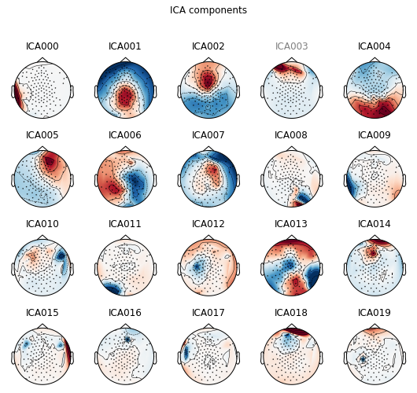
[<Figure size 540x504 with 20 Axes>]
When running the code on ipython as suggested in the previous notebook, the plot is actually interactive. By clicking on the component, it shows the component properties. Clicking on the name of the component will gray out the name and be marked as bad IC. Here, it seems components 2, 14, and 18 have high activation in the eye regions, which could be identified as components with eye blinks. Also, componnent 5 has activation in the frontal region, and has polar activities between left and right, which could potentially be eye movements. Because the plot above is not interactive, we will specify which ICs to exclude as a line of code.
Since we’ve identified the bad ICs, we can apply it to our epochs_tlstS, and proceed to autoreject.
ica.exclude += [0, 2, 5, 14, 18]
print(ica.exclude)
ica.apply(epochs_tlstS)
print('number of ICs dropped: ' + str(len(ica.exclude)))
[3, 0, 2, 5, 14, 18]
number of ICs dropped: 6
Autoreject
Now that we have bad ICs identified, we try implementing autoreject for cleaning. Note that the step below may take some time as it tries find bad channels and fix them.
ar = AutoReject()
epochs_clean = ar.fit_transform(epochs_tlstS)
Running autoreject on ch_type=eeg
[........................................] 100.00% Creating augmented epochs \ Computing thresholds ...
[Parallel(n_jobs=1)]: Done 1 out of 1 | elapsed: 2.4s remaining: 0.0s
[Parallel(n_jobs=1)]: Done 2 out of 2 | elapsed: 4.0s remaining: 0.0s
[Parallel(n_jobs=1)]: Done 3 out of 3 | elapsed: 5.5s remaining: 0.0s
[Parallel(n_jobs=1)]: Done 4 out of 4 | elapsed: 7.3s remaining: 0.0s
[Parallel(n_jobs=1)]: Done 5 out of 5 | elapsed: 10.5s remaining: 0.0s
[Parallel(n_jobs=1)]: Done 6 out of 6 | elapsed: 13.2s remaining: 0.0s
[Parallel(n_jobs=1)]: Done 7 out of 7 | elapsed: 16.4s remaining: 0.0s
[Parallel(n_jobs=1)]: Done 8 out of 8 | elapsed: 19.5s remaining: 0.0s
[Parallel(n_jobs=1)]: Done 9 out of 9 | elapsed: 21.7s remaining: 0.0s
[Parallel(n_jobs=1)]: Done 10 out of 10 | elapsed: 24.6s remaining: 0.0s
[Parallel(n_jobs=1)]: Done 11 out of 11 | elapsed: 27.5s remaining: 0.0s
[Parallel(n_jobs=1)]: Done 12 out of 12 | elapsed: 30.3s remaining: 0.0s
[Parallel(n_jobs=1)]: Done 13 out of 13 | elapsed: 33.4s remaining: 0.0s
[Parallel(n_jobs=1)]: Done 14 out of 14 | elapsed: 35.4s remaining: 0.0s
[Parallel(n_jobs=1)]: Done 15 out of 15 | elapsed: 36.8s remaining: 0.0s
[Parallel(n_jobs=1)]: Done 16 out of 16 | elapsed: 38.4s remaining: 0.0s
[Parallel(n_jobs=1)]: Done 17 out of 17 | elapsed: 40.2s remaining: 0.0s
[Parallel(n_jobs=1)]: Done 18 out of 18 | elapsed: 42.2s remaining: 0.0s
[Parallel(n_jobs=1)]: Done 19 out of 19 | elapsed: 44.8s remaining: 0.0s
[Parallel(n_jobs=1)]: Done 20 out of 20 | elapsed: 47.0s remaining: 0.0s
[Parallel(n_jobs=1)]: Done 21 out of 21 | elapsed: 48.7s remaining: 0.0s
[Parallel(n_jobs=1)]: Done 22 out of 22 | elapsed: 50.1s remaining: 0.0s
[Parallel(n_jobs=1)]: Done 23 out of 23 | elapsed: 51.6s remaining: 0.0s
[Parallel(n_jobs=1)]: Done 24 out of 24 | elapsed: 53.1s remaining: 0.0s
[Parallel(n_jobs=1)]: Done 25 out of 25 | elapsed: 54.8s remaining: 0.0s
[Parallel(n_jobs=1)]: Done 26 out of 26 | elapsed: 56.4s remaining: 0.0s
[Parallel(n_jobs=1)]: Done 27 out of 27 | elapsed: 57.9s remaining: 0.0s
[Parallel(n_jobs=1)]: Done 28 out of 28 | elapsed: 59.8s remaining: 0.0s
[Parallel(n_jobs=1)]: Done 29 out of 29 | elapsed: 1.0min remaining: 0.0s
[Parallel(n_jobs=1)]: Done 30 out of 30 | elapsed: 1.1min remaining: 0.0s
[Parallel(n_jobs=1)]: Done 31 out of 31 | elapsed: 1.1min remaining: 0.0s
[Parallel(n_jobs=1)]: Done 32 out of 32 | elapsed: 1.1min remaining: 0.0s
[Parallel(n_jobs=1)]: Done 33 out of 33 | elapsed: 1.1min remaining: 0.0s
[Parallel(n_jobs=1)]: Done 34 out of 34 | elapsed: 1.2min remaining: 0.0s
[Parallel(n_jobs=1)]: Done 35 out of 35 | elapsed: 1.2min remaining: 0.0s
[Parallel(n_jobs=1)]: Done 36 out of 36 | elapsed: 1.2min remaining: 0.0s
[Parallel(n_jobs=1)]: Done 37 out of 37 | elapsed: 1.2min remaining: 0.0s
[Parallel(n_jobs=1)]: Done 38 out of 38 | elapsed: 1.3min remaining: 0.0s
[Parallel(n_jobs=1)]: Done 39 out of 39 | elapsed: 1.3min remaining: 0.0s
[Parallel(n_jobs=1)]: Done 40 out of 40 | elapsed: 1.3min remaining: 0.0s
[Parallel(n_jobs=1)]: Done 41 out of 41 | elapsed: 1.4min remaining: 0.0s
[Parallel(n_jobs=1)]: Done 42 out of 42 | elapsed: 1.4min remaining: 0.0s
[Parallel(n_jobs=1)]: Done 43 out of 43 | elapsed: 1.4min remaining: 0.0s
[Parallel(n_jobs=1)]: Done 44 out of 44 | elapsed: 1.4min remaining: 0.0s
[Parallel(n_jobs=1)]: Done 45 out of 45 | elapsed: 1.5min remaining: 0.0s
[Parallel(n_jobs=1)]: Done 46 out of 46 | elapsed: 1.5min remaining: 0.0s
[Parallel(n_jobs=1)]: Done 47 out of 47 | elapsed: 1.5min remaining: 0.0s
[Parallel(n_jobs=1)]: Done 48 out of 48 | elapsed: 1.6min remaining: 0.0s
[Parallel(n_jobs=1)]: Done 49 out of 49 | elapsed: 1.6min remaining: 0.0s
[Parallel(n_jobs=1)]: Done 50 out of 50 | elapsed: 1.6min remaining: 0.0s
[Parallel(n_jobs=1)]: Done 115 out of 115 | elapsed: 3.8min finished
[........................................] 100.00% n_interp \ chs |
Estimated consensus=0.30 and n_interpolate=4
[........................................] 100.00% Repairing epochs |
The above created a new epochs called epochs_clean. We can compare how the epochs are cleaned by comparing the two plots. For demonstration, we only plot the epochs_clean. The plot shows individual epochs with green line being 0 (the onset of the word in the experiment). In the interactive plot mode, you can scroll vertically to see different channels and horizontally to search through epochs.
print(epochs_clean.plot())
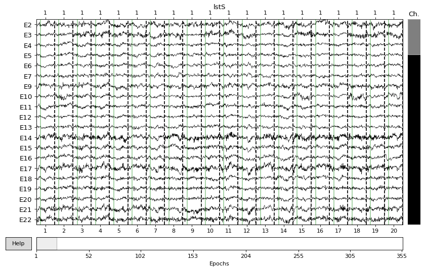
Figure(869.6x536.8)
Creating evoked response from epochs_clean
Now that we have a new, ideally cleaner epochs, we create evoked response for each condition. Currently, epochs_clean contains all four conditions with approximately 100 epochs for each (less than 400 now because epochs been rejected). Note that the y-axis microvolt scale has been refined compared to our previous notebook.
# now let's create a new evoked responses (ie. the autoreject evoked)
arevoked_tlst_c1 = epochs_clean["label=='lstS' and cond=='1'"].average()
arevoked_tlst_c2 = epochs_clean["label=='lstS' and cond=='2'"].average()
arevoked_tlst_c3 = epochs_clean["label=='lstS' and cond=='3'"].average()
arevoked_tlst_c4 = epochs_clean["label=='lstS' and cond=='4'"].average()
# let's see a sample evoked response
print(arevoked_tlst_c1.plot_joint(times='peaks'))
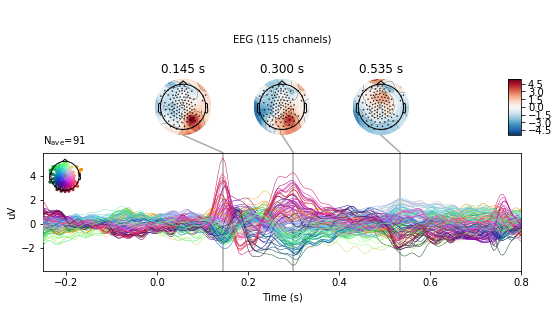
Figure(576x302.4)
Plotting ERP comparison
Now that we have evoked response for each condition, we can look into specific channels of interest to see how the signals differ by conditions. For the selection list, we will only specify channel E92 as it will create 4 graphs for each channel.
# we specify which channels to look at
selection = ['E92'] # ['EB','E11','E24','E124','E36','E104','E52','E62','E92']
picks_select = mne.pick_types(epochs_clean.info, meg=False, eeg=True, eog=True, stim=False,
exclude='bads', selection=selection)
# create dictionary for each condition
evoked_dict = {'highcosval': arevoked_tlst_c1,
'lowcosval': arevoked_tlst_c2,
'highcosinval': arevoked_tlst_c3,
'lowcosinval': arevoked_tlst_c4}
picks_select = mne.pick_types(arevoked_tlst_c1.info, meg=False, eeg=True, eog=True, stim=False,
exclude='bads', selection=selection)
# this will plot each selected channel with comparison of two conditions
title = '%s_vs_%s_E%s.png'
for i in range(0, len(picks_select)):
fig1 = mne.viz.plot_compare_evokeds({'highcos/val':evoked_dict['highcosval'],
'lowcos/val':evoked_dict['lowcosval']}, picks=picks_select[i])
fig2 = mne.viz.plot_compare_evokeds({'highcos/inval':evoked_dict['highcosinval'],
'lowcos/inval':evoked_dict['lowcosinval']}, picks=picks_select[i])
fig3 = mne.viz.plot_compare_evokeds({'highcos/val':evoked_dict['highcosval'],
'highcos/inval':evoked_dict['highcosinval']},picks=picks_select[i])
fig4 = mne.viz.plot_compare_evokeds({'lowcos/val':evoked_dict['lowcosval'],
'lowcos/inval':evoked_dict['lowcosinval']}, picks=picks_select[i])
# save figs
# fig1.savefig(title % (evoked_dict.keys()[0], evoked_dict.keys()[1], i))
# fig2.savefig(title % (evoked_dict.keys()[2], evoked_dict.keys()[3], i))
# fig3.savefig(title % (evoked_dict.keys()[0], evoked_dict.keys()[2], i))
# fig4.savefig(title % (evoked_dict.keys()[1], evoked_dict.keys()[3], i))
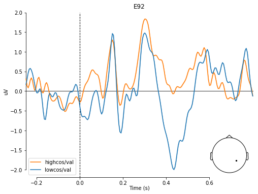
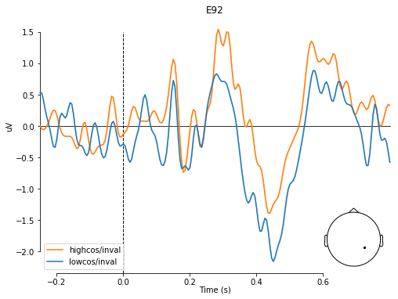
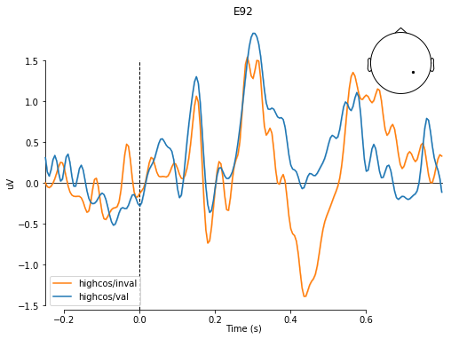
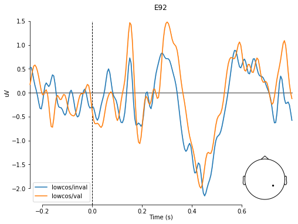
# this will plot just the evoked responses per conditions with all channels
fig5 = arevoked_tlst_c1.plot(titles='cond1: high cos/val')
fig6 = arevoked_tlst_c2.plot(titles='cond2: low cos/val')
fig7 = arevoked_tlst_c3.plot(titles='cond3: high cos/inval')
fig8 = arevoked_tlst_c4.plot(titles='cond4: low cos/inval')
# save figs
# fig5.savefig('c1all.png')
# fig6.savefig('c2all.png')
# fig7.savefig('c3all.png')
# fig8.savefig('c4all.png')
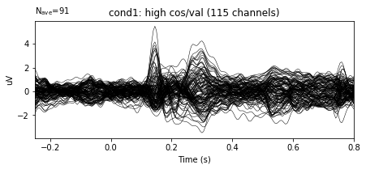
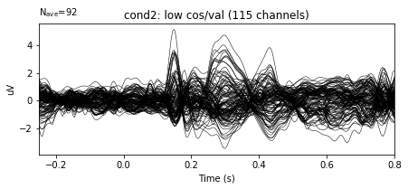
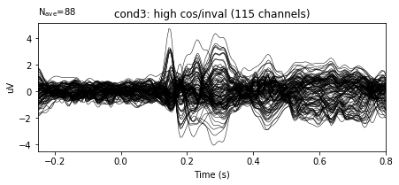
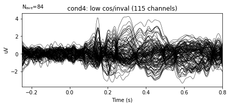
Sources and useful links
EEGLab ICA guide: https://sccn.ucsd.edu/wiki/Chapter_09:_Decomposing_Data_Using_ICA
MNE ICA class: https://martinos.org/mne/stable/generated/mne.preprocessing.ICA.html
autoreject: http://autoreject.github.io/auto_examples/plot_auto_repair.html#sphx-glr-auto-examples-plot-auto-repair-py
Clemens Brunner’s great guide on ICA: https://cbrnr.github.io/2018/01/29/removing-eog-ica/
Clemens Brunner’s great guide on EOG detection using linear regression: https://cbrnr.github.io/2017/10/20/removing-eog-regression/